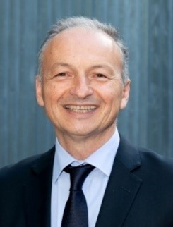
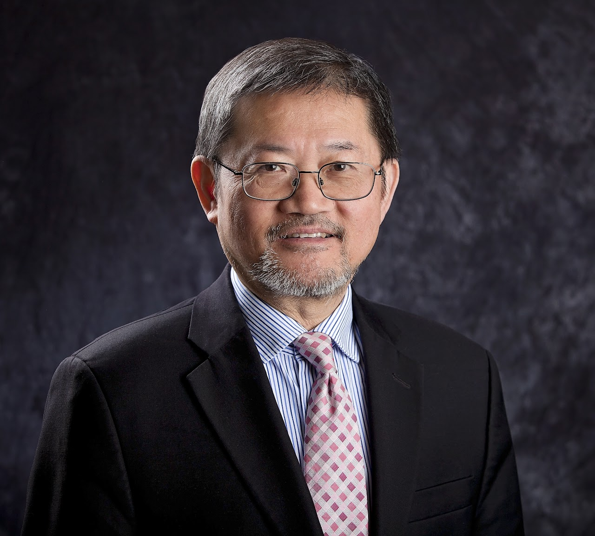
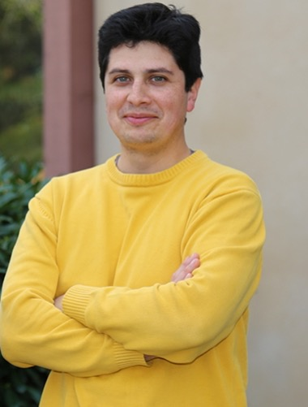
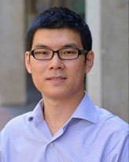
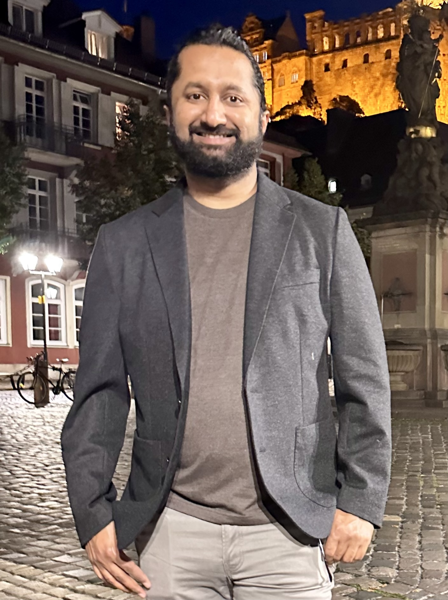
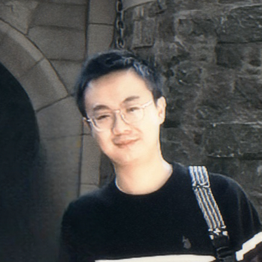

Recent news
Le Xie elected as a PJM Board Member
Professor Le Xie has been elected to the Board of PJM Interconnection, one of the world’s largest regional transmission organizations.

Updates
This page keeps current announcements visible alongside seminar archives from 2026, 2025, and 2024.
Recent news
Professor Le Xie has been elected to the Board of PJM Interconnection, one of the world’s largest regional transmission organizations.

Upcoming seminar
Qianwen Xu is an Associate Professor at KTH Royal Institute of Technology, Sweden, where she leads the Intelligent Sustainable Grid Lab and co-directs the Dig-It Lab.
Abstract: Modern power systems are rapidly evolving into converter-dominated energy systems driven by distributed energy resources, electrified transport, and emerging large-scale loads such as data centers. This transformation fundamentally reshapes the nature of grid stability and operation: stability is no longer governed by physical inertia, but by fast, complex converter interactions, and system operation must cope with increasing uncertainty and scale. This talk presents how artificial intelligence can address these challenges, including data-driven modeling of converter-interfaced assets, real-time stability assessment of converter-grid interactions, and learning-based control for large-scale grids. Together, these advances point toward a new paradigm of autonomous, AI-enabled energy systems, where learning-based intelligence is tightly integrated with physical constraints to ensure stability, efficiency, and resilience.
Speaker Bio: Qianwen Xu is an Associate Professor at KTH Royal Institute of Technology, Sweden, where she leads the Intelligent Sustainable Grid Lab and co-directs the Dig-It Lab. She received her PhD from Nanyang Technological University, Singapore in 2018. Her research focuses on modeling, stability assessment, and control of power electronics-dominated energy systems, with an emphasis on scalability, safety, and autonomous operation. Her work spans applications in microgrids, electrified transport, utility grid and data center energy systems. She serves as an Associate Editor for several leading IEEE Transactions, and has received the IEEE J. David Irwin Early Career Award (2025). Her work has also been recognized by the Royal Swedish Academy of Engineering Sciences (IVA 100) for its societal impact.
2026 seminars

Jovica Milanovic is Immediate Past Head of the Department of Electrical and Electronic Engineering at the University of Manchester and an internationally recognized leader in power-system analysis and control.
Abstract: Due to evident climate change and environmental pressures, future energy systems will have to operate, sooner rather than later, in a net-zero environment. This will manifest in a mix of electricity generation, storage, and demand technologies; blurred boundaries between transmission and distribution; higher reliance on legacy and measurement data, including global signals, for system identification, characterization, and control; and Information and Communication Technology embedded throughout the power network and its components. Key characteristics of this complex system will include proliferation of power electronic devices, increased uncertainties in system operation and parameters, and much greater reliance on measurement and other collected data.
Speaker Bio: Jovica V Milanovic received Dipl.Ing. and M.Sc. degrees from the University of Belgrade, a Ph.D. from the University of Newcastle, Australia, and a D.Sc. from the University of Manchester, UK. Prior to joining Manchester in 1998, he worked with Energoproject, the University of Belgrade, and the Universities of Newcastle and Tasmania. He is also a Visiting Professor at the University of Novi Sad and the University of Belgrade, Serbia, and an Honorary Professor at the University of Queensland, Australia. He has chaired six international conferences, contributed to numerous IEEE, CIGRE, and CIRED working groups, led or participated in research projects totaling more than £86 million, published more than 650 papers and reports, delivered over 35 keynote speeches, and presented more than 150 courses, tutorials, and lectures.

Professor Chen-Ching Liu is American Electric Power Professor Emeritus and Research Professor at Virginia Tech.
Abstract: Many applications of Artificial Intelligence to power systems have been proposed over the last 40 years. The maturity of these basic AI technologies, including expert systems, artificial neural networks, fuzzy logic, and multi-agent systems, varies from proof-of-concept R&D to practical implementation and use in real-world power grids. Although the technical feasibility of AI technologies has been established, success is limited in widespread commercialization and adoption by the power industry. In this seminar, the presenter will provide an explanation of the AI applications to power grids that he and his group have conducted over decades, including ongoing projects. The purpose is to demonstrate the applicability and feasibility of AI technologies as well as their limitations. The seminar will include a discussion of the lessons learned and future opportunities for new AI tools in smart grids.
Speaker Bio: Chen-Ching Liu is American Electric Power Professor Emeritus and Research Professor at Bradley Department of Electrical and Computer Engineering, Virginia Tech. He is also an Emeritus Full Professor of University College Dublin, Ireland. During 1983-2017, he was on the faculty of University of Washington, Iowa State University, University College Dublin, Ireland, and Washington State University. Professor Liu received an IEEE Third Millennium Medal and PES Outstanding Power Engineering Educator Award. He received the Dale Douglass Award for Technical Achievement in 2024 and Attwood Associate Award in 2006, from the CIGRE U.S. National Committee. Dr. Liu received a Doctor Honoris Causa from Polytechnic University of Bucharest, Romania. He chaired the IEEE PES Fellow Committee and Technical Committee on Power System Analysis, Computing and Economics. Professor Liu is the U.S. Member on CIGRE Study Committee D2: Information Systems, Telecommunication, and Cyber Security. He co-founded the series of international symposia on Intelligent System Applications to Power Systems (ISAP). Dr. Liu is a Life Fellow of the IEEE and Member of the U.S. National Academy of Engineering.
2025 seminars
Abstract: Machine learning can significantly improve performance for decision-making under uncertainty in a wide range of domains. However, ensuring robustness guarantees and satisfaction of risk constraints requires well-calibrated uncertainty estimates, yet there may be many valid uncertainty estimates, each with their own performance profile, i.e., not all uncertainty is equally valuable for downstream decision-making. To address this problem, we developed an end-to-end framework to learn uncertainty representations for stochastic, robust, and risk-constrained optimization in a way that is informed by the downstream decision-making loss. For stochastic optimization, we train a conditional diffusion model from which we sample scenarios, using a novel approximation to backpropagate gradients through the diffusion model sampling procedure, achieving 60x GPU memory savings over standard techniques. In robust optimization, we approximate arbitrary convex uncertainty sets with sublevel sets of partially input-convex neural networks. Finally, for risk-constrained optimization, we devise a general, differentiable risk control procedure that generalizes conformal risk control. Our approach consistently improves upon two-stage estimate-then-optimize baselines on concrete applications across energy systems and finance.
Speaker Bio: Chris Yeh is a final-year PhD candidate in Computing and Mathematical Sciences at Caltech, where he is advised by professors Yisong Yue and Adam Wierman. He develops foundational datasets and algorithms for deploying reliable AI in critical energy, sustainability, and scientific applications, contributing theoretical insights with practical impact. Chris is a Quad Fellow and a Caltech Resnick Sustainability Institute Scholar. He holds a B.S. and M.S. in Computer Science from Stanford University, and a M.M.S. in Global Affairs from Schwarzman College, Tsinghua University.
Abstract: This presentation focuses on innovative control strategies for dynamic virtual power plants (DVPPs) aimed at providing dynamic ancillary services efficiently. The first part highlights the importance of heterogeneity among distributed energy resources in reliably delivering services like fast frequency and voltage control across various power and energy levels. A “divide-and-conquer” approach, along with dynamic participation factors and local matching controllers, is proposed. The second part introduces a closed-loop strategy incorporating data-driven techniques to adapt ancillary services to local grid conditions. Structural encoding of dynamic ancillary services and a “perceive-and-optimize” strategy ensure stable and optimal performance while meeting grid-code and device-level requirements. Numerical case studies and hardware experiments validate the effectiveness of these approaches, promising improved grid stability and efficiency.
Speaker Bio: Florian Dörfler is a Professor at the Automatic Control Laboratory at ETH Zürich. He received his Ph.D. degree in Mechanical Engineering from the University of California at Santa Barbara in 2013, and a Diplom degree in Engineering Cybernetics from the University of Stuttgart in 2008. From 2013 to 2014 he was an Assistant Professor at the University of California Los Angeles. He has been serving as the Associate Head of the ETH Zürich Department of Information Technology and Electrical Engineering from 2021 until 2022. His research interests are centered around automatic control, system theory, optimization, and learning. His particular foci are on network systems, data-driven settings, and applications to power systems. He is a recipient of the 2025 Rössler Prize, the highest scientific award at ETH Zürich across all disciplines, as well as the distinguished career awards by IFAC (Manfred Thoma Medal 2020) and EUCA (European Control Award 2020). He is currently serving on the council of the European Control Association and as a senior editor of Automatica.
Abstract: Climate change has become one of the defining challenges of our time. Despite global consensus on the urgency of action and a growing suite of technological options, from renewables to carbon management, emissions continue to rise. Bridging the gap between climate ambition and real-world outcomes requires understanding how decisions are made across all levels of society. This talk examines how firms, power utilities, and nations make climate-related decisions under different policy contexts. Using tools from optimization, simulation, and game theory, we study decision-making in policy-following contexts shaped by incentives and market volatility, policy-making contexts where utilities design renewable pricing and revenue-sharing strategies, and no-policy contexts where international climate pledges evolve through global trading networks. Together, these studies uncover the mechanisms and incentives underlying climate decision-making and offer a unified framework for aligning behaviors toward faster and more coordinated climate action.
Speaker Bio: Zhiyuan Fan is a Ph.D. candidate in the Department of Earth and Environmental Engineering at Columbia University. His research focuses on decision-making in climate mitigation, bridging the gap between global climate ambitions and localized climate actions. He develops mathematical models and analytical frameworks to understand how firms, power systems, and governments make climate-related decisions, uncovering mechanisms that accelerate or hinder mitigation efforts. He is also a Research Associate at Columbia’s Center on Global Energy Policy (CGEP) at the School of International and Public Affairs, where he supports the Carbon Management Research Initiative and the Energy System Modeling Program. His work centers on energy system optimization, hard-to-abate sectors, CO2 utilization and recycling, and low-carbon infrastructure analysis. Prior to his Ph.D. program, Zhiyuan worked as a graduate researcher at Columbia University’s Sustainable Engineering Lab in the Department of Mechanical Engineering, where he studied energy system modeling and optimization for deep renewable penetration and electrification of heavy road transportation. He holds an M.S. in Mechanical Engineering (Energy Systems concentration) from Columbia University and a B.Eng. in Mechanical and Aerospace Engineering from the Hong Kong University of Science and Technology.
Abstract: Robust optimization (RO) and distributionally robust optimization (DRO), as relatively new optimization schemes, have been adopted in many practical systems, such as power, logistics and healthcare systems, to support their design, operations, and reliabilities. Conventionally, due to the sophisticated and nested min-max structures, two-stage RO and DRO are often studied using duality-based techniques, aiming to simplify their structures and obtain monolithic reformulations. Nevertheless, research developed from such dual perspective is rather abstract and technically demanding, which is less friendly to build intuitive understanding.
In this talk, unlike existing research, we take the primal perspective to analyze RO and DRO, and directly make use of their primal structures to develop computational algorithms. The resulting column-and-constraint generation algorithm and its variants are, overall, simple, intuitive, and application-friendly. Actually, they often drastically outperform existing solution methods. Extensions to handle decision-dependent uncertainty (DDU), which is closely related to the phenomenon of the “induced demand,” will also be discussed. Demonstrations in logistics, production, and energy systems, along with computational results and managerial insights, are presented to help us appreciate RO and DRO and those solution methods in practice.
Speaker Bio: Dr. Bo Zeng is an Associate Professor of Industrial Engineering in the Swanson School of Engineering at the University of Pittsburgh where he teaches and conducts research in discrete and robust optimization, with applications in logistics, energy, and healthcare systems. Prior to that, he worked as an assistant professor of Industrial and Management Systems Engineering at the University of South Florida. Through his research, Dr. Zeng has developed several analytical operational models and algorithms, including the basic column-and-constraint generation method and its variants, that have been extensively applied in energy, logistics and other critical infrastructure systems, to address real design and operational issues and to hedge against risks and to achieve better reliability and security. He is a professional member of IISE, INFORMS and IEEE.
Abstract: Many of the most urgent decisions in modern power systems are fundamentally combinatorial, with feasible spaces that dwarf the number of atoms in the known universe. Traditional approaches based on integer and nonlinear programming often lock us into brittle formulations that may struggle to scale with the granularity, complexity, and uncertainty we will face in tomorrow’s grid. In this talk, I present a new algorithmic framework that bridges combinatorial and continuous optimization through physics-aware approximation. By integrating the structure of power flow equations with tools from high-dimensional statistics, spectral graph theory, and differentiable optimization, I show how core problems like topology inference and network reconfiguration can be solved efficiently. This work lays the foundation for a new generation of grid-aware AI systems: adaptive, interpretable, and capable of acting in real time under uncertainty.
Speaker Bio: Samuel Talkington is a Ph.D. candidate in Electrical and Computer Engineering at Georgia Tech and a National Science Foundation Graduate Research Fellow. His research focuses on designing fast, reliable algorithms for inference and control in electric power networks, drawing on applied mathematics, graph theory, and statistical learning to meet the challenges of tomorrow’s grid.

Abstract: A known challenge in solving unit commitment problems is the large number of acceptable solutions that lie within any practical optimality tolerance. During operations, existing software arbitrarily selects one among the set of acceptable solutions. Whereas these acceptable solutions are similar in total cost or welfare, they can lead to radically different outcomes in other aspects, such as prices, transfers, and reliability. A number of studies in the literature have relied on enumeration techniques, or no-good cuts, to produce and investigate the variations among different acceptable solutions. These techniques, however, struggle to obtain diverse subsets of acceptable solutions, requiring long computations to achieve the level of diversity that allows the study of differences among them.
In this talk, we present a novel enumeration approach, designed to generate diverse subsets of acceptable solutions for the unit commitment problem, aiming at achieving the maximum diversity within a set wall clock time limit. Instead of selecting and removing points from the acceptable solution set one-by-one, our approach removes them in pairs, selecting the most distant solutions at each iteration. This two-solution removal step is followed by a careful non-intersecting partition of the remainder of solution space. The two-solution removal is then recursively carried out for each remaining component of the partition, a process that we organize using a queue, and later parallelize using high-performance computing. We discuss integer programming strength properties of our approach in comparison with alternatives and discuss details of its implementation. Finally, we present a numerical comparison of our approach against approaches from the literature, showing how it is able to produce more diverse sets of solutions at a similar or smaller computational cost. Document control number: LLNL-ABS-2003726.
Speaker Bio: Ignacio Aravena is a Principal Member of Research Staff and the Group Leader of the Optimization and Control Group at the Computational Engineering Division of the Lawrence Livermore National Laboratory. His research lies at the intersection of advanced power systems models, novel or specialized optimization algorithms, and high-performance computing. Examples of his work include the development of asynchronous and decentralized algorithms for scheduling problems in power grids, analysis of zonal energy market designs, algorithms for power system restoration, and algorithms for power systems on hybrid CPU-GPU architectures. Ignacio holds BS and MS degrees in Electrical Engineering from Universidad Tecnica Federico Santa Maria (UTFSM, Chile) and a PhD in Applied Mathematics from the Universite catholique de Louvain (Belgium). Formerly, he served as lecturer in Electrical Engineering at UTFSM and in Integer Programming at the University of California at Berkeley. Ignacio has also worked as an Optimization Specialist at ENEL Generacion (Chile) and served as a consultant for Powel AS (Norway).

Abstract: Ambient air pollution, especially fine particulate matter with a diameter of 2.5 micrometers or smaller (PM2.5), is a leading risk factor for global disease burden, contributing to asthma attacks, lung cancer, and an estimated 4 million premature deaths annually. In the United States, despite years of progress, power plants remain a leading source of air pollutants and impose public health burdens on communities across the country. Crucially, due to the “non-threshold” nature, even small reductions in PM2.5 can yield substantial public health benefits.
This talk introduces Health-Informed AI, which places clean air and people’s health at the center, both in how AI is developed and in how it drives innovation across other sectors. I will first present our research on leveraging the operational flexibility of energy-intensive AI data centers to mitigate their growing public health cost. Then, I will explore how AI can actively promote public health through intelligent energy management on both the demand and supply sides.
Speaker Bio: Shaolei Ren is an Associate Professor of Electrical and Computer Engineering at the University of California, Riverside. His research broadly focuses on AI, energy, and public health. His work has generated societal impacts, shaping AI policies incorporated into governance frameworks by international organizations such as the United Nations, UNESCO, and WHO. Additionally, his work has driven industry innovations, including the first real-time water footprint reporting tool for computing. He is a recipient of the NSF CAREER Award (2015) and several paper awards, including at ACM e-Energy (2024, 2016) and IEEE ICC (2016). He earned his Ph.D. from the University of California, Los Angeles.
Abstract: The digitalization of the economy coupled with the rapid advancement of AI, fueled by the success of large language models like ChatGPT, has dramatically increased energy consumption in data centers. This talk discusses a potential solution: converting data centers into flexible computing platforms that enable integration into power grid programs such as demand response or with behind-the-meter generation. This flexibility augments power usage without requiring new fossil-fuel infrastructure and facilitates more ambitious renewable deployment. However, the unique scale, operational constraints, and future projections of data centers present distinct challenges for implementing this vision. On the other hand, data centers, in contrast to other electricity consumers, already offer greater flexibility in power control and the potential for coordinated optimization with the grid. This intersection of challenges and capabilities opens avenues for designing intelligent solutions that dynamically adjust data center power usage in response to grid or on-site generation requirements while meeting user performance demands. This talk introduces a software suite that optimizes and operates data center flexibility, while providing quality-of-service guarantees to data center users, and demonstrates a proof-of-concept prototype that was built on a cluster at the MA Green High Performance Computing Center.
Speaker Bio: Prof. Ayse K. Coskun is a full professor at Boston University (BU) at the Electrical and Computer Engineering Department, where she leads the Performance and Energy Aware Computing Laboratory (PeacLab) to solve problems towards making computer systems more intelligent and energy-efficient. Coskun is also the Director of the Center for Information and Systems Engineering (CISE) at BU, a research center themed on intelligent systems. Coskun’s research interests intersect design automation, large-scale computer systems, and applied machine learning. Her research outcomes are culminated in several technical awards, including the IEEE CEDA Ernest Kuh Early Career Award, an IBM Faculty Award, and an IEEE TCAD Donald O. Pederson Best Paper Award. Coskun currently serves as the Deputy Editor-in-Chief of the IEEE Transactions on Computer Aided Design. Coskun is also the Chief Scientist at Emerald AI, a venture focused on implementing flexible computing at scale in real-world AI data centers. She received her PhD degree in Computer Engineering from University of California San Diego.
2024 seminars

Noman Bashir is a Computing & Climate Impact Fellow at the Climate & Sustainability Consortium, Massachusetts Institute of Technology.
Abstract: Cloud platforms’ rapid growth is raising significant concerns about their environmental impact. To reduce their emissions, future cloud platforms will need to increase their reliance on renewable energy sources, such as solar and wind, which have zero emissions but are highly unreliable. Unfortunately, today’s energy systems effectively mask this unreliability in hardware, which prevents applications from optimizing their carbon efficiency or work done per kilogram of carbon emitted. In this talk, I will discuss my work on virtualizing the energy system that enables visibility into and exposes software-defined control of the energy system to applications. By doing so, it enables each application to handle clean energy’s unreliability in software while accommodating users and applications with different characteristics, goals, strategies, and tolerances for reducing carbon and energy. I also developed higher-level abstractions to manage this complexity for the applications that do not want to modify their logic and interact directly with the virtual energy system. Finally, I will discuss how my existing and ongoing work lays strong foundations for my future research on designing and operating sustainable datacenters.
Speaker Bio: Noman Bashir is the Computing & Climate Postdoctoral Impact Fellow at MIT Computer Science & Artificial Intelligence Laboratory (CSAIL) and MIT Climate & Sustainability Consortium (MCSC). Noman is a computer systems researcher focused on improving the sustainability of computing. His work pushes the boundaries of computer systems design and operation to address emerging challenges of rapidly rising computing demand, increasing electric grid constraints, and growing complexity in datacenters’ local energy systems. He takes the requisite multidisciplinary approach that integrates domain-specific knowledge from energy systems and industrial ecology with advanced computer systems approaches to develop high-impact solutions at all layers of computer system stacks and all steps in their lifecycles. In manifesting real-world impact, his work has enhanced the resource efficiency of Google’s datacenters and powered community testbeds for carbon-efficient applications.
Robert Davidson is Vice President of Grid Reliability Projects and Planning at the Alberta Electric System Operator, with more than 25 years of utility experience.

Abstract: The growing integration of renewable energy sources presents significant challenges to power system stability. To achieve optimal nonlinear control, Model-Based Reinforcement Learning (MBRL) has emerged as a crucial technology. However, the absence of accurate dynamical models poses significant challenges due to growing power electronics, increasing uncertainty from demands and generations, etc. While Deep Learning (DL) methods offer promising surrogate models, they struggle with internal data scarcity, external environmental variability, and the lack of performance guarantees.
In this talk, I address the problem by proposing cutting-edge DL models with guaranteed interpolation and adaptation capabilities. By leveraging the intrinsic data structures, I demonstrate how geometric properties can be enforced within DL models. This approach transforms interpolation and adaptation tasks into elegant geometric optimizations, providing a pathway to rigorous error analysis and provable performance guarantees. This framework not only enhances our understanding of the intersection between dynamic modeling and geometric DL but also establishes a solid foundation for applying MBRL in power systems.
Speaker Bio: Dr. Haoran Li received his bachelor’s degree from Tsinghua University and PhD degree from Arizona State University. He has also been a visiting scholar at the University of Illinois Urbana-Champaign. Currently, Dr. Li is a visiting scholar at the Massachusetts Institute of Technology. Dr. Li’s research interests include power system estimation and control, physics-informed learning, and geometric Deep Learning.